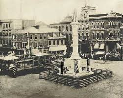

I was so excited when Mike and Kerry chose Lancaster, PA as the location for their wedding, because our hometown is one of the coolest places in the world. (And I've been to a lot of cool places, trust me!) I've put together a list of our favorite places in Lancaster City with the hope that you'll have some time to check them out and enjoy our hometown.
Kerry and I (and Mom and Jillian and John and many other folks you're going to meet) have watched Lancaster city change in a drastic and wonderful way over the last decade. There are many exciting new places to check out, but instead of pointing you to a big corporate website, we're going to point you in the right direction. Check out some of our favorite local attractions that we go back to time and time again, and if you have any questions about something that isn't listed here, I'm more than happy to point you in the right direction.
Sincerely, your pal
-Kristen